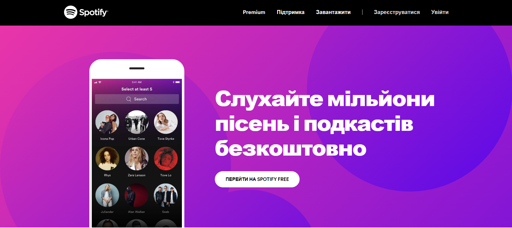

Spotify
Посилання на сайт-приклад: Spotify

Spotify - платформа, що дозволяє прослуховувати музичні композиції та подкасти онлайн, не завантажуючи їх на пристрій.
Аналог
YourMelody - платформа, де кожен знайде музику на свій смак. Якщо Ви – автор-початківець, то YourMelody – це чудова можливість поділитися своїми треками та знайти аудиторію.
Платформа матиме дві версії: безкоштовну та преміум.
В безкоштовній версії платформи існуватимуть деякі обмеження:
- реклама
- максимальна кількість пісень у плей-листах кожного користувача - 50
- максимальна кількість плей-листів кожного користувача - 10
Як заробити?
Преміум-версія платформи передбачає скасування реклами та необмежену кількість плей-листів та пісень в них. Також у авторів буде можливість продавати деякі свої альбоми. Частину прибутку отримуватиме YourMelody.